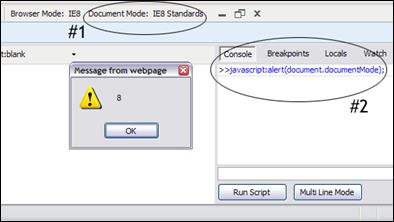

The Debugging Process
Identify Problems Using Web SuperPreview or Windows Virtual PCs
One of the quickest ways you can identify potential problems in a web page is using Web SuperPreview or Windows Virtual PCs. By opening any site and viewing side by side comparisons or overlaying one page over the other in Web SuperPreview, you can visually isolate any problem areas which exist. This is helpful when you are creating new web pages and would like to ensure they are compatible in all versions of Internet Explorer or when testing your current web pages for compatibility with Internet Explorer 8.
Isolating Problems Using Developer Tools
Once a problem has been identified on a page the Developer Tools can be used to gather more information and reduce the problem size.
Determining and Setting the Document Compatibility Mode
The first step when debugging any site in Internet Explorer 8 is identifying which document compatibility mode the page is rendered in. Document compatibility modes define how Internet Explorer should render the page and can be toggled by developers using an X-UA-Compatible header. Knowing the document compatibility mode informs us what set of rules Internet Explorer is abiding by and helps us to identify the cause of certain problems.
Internet Explorer 8 supports the following document compatibility modes: Emulate IE8, Emulate IE7, IE5, IE7, IE8, and Edge. The two Emulate modes use a pages DOCTYPE directive to determine how a page should be rendered. If a standard mode DOCTYPE is present, the page will be rendered using the mode specified (IE8 mode for Emulate IE8 or IE7 mode for Emulate IE7). If a quirks mode DOCTYPE directive is present, the page will be rendered in IE5 mode for both Emulate modes. IE5, IE7, and IE8 modes, however, will force the browser to render the specified mode regardless of the DOCTYPE directive. Lastly, Edge mode will force Internet Explorer to use the highest support for standards available. In most cases, users are strongly encouraged to use an Emulate document compatibility mode such as Emulate IE8 and Emulate IE7 as these modes will not force pages normally rendered in quirks mode (such as framesets) into standards mode providing more comprehensive compatibility.
 For more information regarding how document compatibility modes may affect your site and how you can implement them using an X-UA-Compatible header, you can visit MSDNs Defining Document Compatibility page or view available videos on the How Do I Videos Internet Explorer 8 page.Using the Developer Tools, we can quickly determine the document compatibility mode of a page using one of the following two methods:
- Inspect the Document Mode option in the Developer Tools toolbar
- Click the Script tab and in the Console pane type javascript:alert(document.documentMode) in the script text box and click Run Script. An alert will appear notifying what document mode the page is in.
While the Document Mode option informs us what document compatibility mode the page is finally rendered in, the Browser Mode details which browser version Internet Explorer is emulating. Setting the Browser Mode to IE7 would define the user agent string (as Internet Explorer 7 in this case) to both the server and within the local script. Declaring the Emulate IE7 document compatibility mode through an X-UA-Compatible header only affects the document mode, so the user agent string remains unchanged, meaning any local scripts would be presented the Internet Explorer 8 UA value. Using the Developer Tools, developers can temporarily toggle different Browser and Document Modes and view their effects on their pages.
Digging into the Code Using the Developer Tools
Some problems can be found and solved using the Developer Tools without the need of extensive updates to the original document. You can use the Developer Tools Select Element by Click (Ctrl + B within the dev tools)
alt="selectelementbyclick"
src="windows-ie8-web-site-troubleshooting-guidance-09.2009-microsoft_files/image007.gif"
 option to help locate problems within the HTML markup and then dynamically update the page within the browser. By inspecting the HTML markup within the Developer Tools you can see how it exists within Internet Explorer which often gives insight into why a part of the page does not render or behave correctly. The Developer Tools allow real time updates to text, styles, and attributes letting you view the changes without leaving the browser.
option to help locate problems within the HTML markup and then dynamically update the page within the browser. By inspecting the HTML markup within the Developer Tools you can see how it exists within Internet Explorer which often gives insight into why a part of the page does not render or behave correctly. The Developer Tools allow real time updates to text, styles, and attributes letting you view the changes without leaving the browser.
The Developer Tools can also be used to debug scripts by enabling you to insert breakpoints, step through code, view locals, and add watch variables.
For a detailed guide on all the features within the Developer Tools and how to utilize them, visit Discovering Internet Explorer Developer Tools.
Reducing the Web Page
If the problem cannot be solved strictly using the Developer Tools it is often useful to reduce the web page. Reducing a web page removes as much unnecessary code as possible while still reproducing the problem. This process helps isolate where the problem occurs within the code, thus making the debugging process simpler. The steps below summarize the actions needed to reduce a web page:
- Create a local copy of the web page
- Strip away any parts of the web page that do not affect the problem
- Continue Step 2 until the web page contains minimal lines of code and no (or few) linked files while still reproducing the original problem.
If you do not have access to the original files, you can save a local copy of the web page using Internet Explorer 8:
- Navigate to the page and wait for it to load completely
- Click Page > Save As
- Change the >Save as type to >Webpage, complete(*.htm;*.html)
- Choose a location and file name
- Click the Save button
Sometimes when saving a copy of a web page all the necessary resources are not saved correctly. In this case and others when youd like to minimize the amount of local resources saved, you can use Fiddler to create a local copy of the web page and replace the remote request for the page with your local copy. This allows you to only save a copy of the files you need to edit without worrying about dependent resources.
To replace a remote request using Fiddler:
- Start Fiddler and Internet Explorer 8. Once both programs open, navigate to the page you want to reduce.
- Fiddler will log all requests and responses, so within the Fiddler window find and highlight the webpage URL that you want to reduce or use Find Sessions (Ctrl + F).
- Right click on the correct row, select Save > Response > Response Body , and save the file locally.
- In order for Fiddler to replace the requested copy with the local copy when the URL is accessed from Internet Explorer 8, you must create a rule. Click on the AutoResponder tab to access the current rules set for the URL row that you selected.
- Click the Add button and in the Rule Editor section at the bottom, click on the second dropdown menu and select Find a file.
- Select your local copy of the page and click the Save button to save the rule.
Once a local copy of the web page has been created, you can again use the Developer Tools Select Element by Click (Ctrl + B) option to help locate the problem in the code. Then, using your favorite HTML editor begin to remove unnecessary HTML from the
<body> section as well as any extraneous
<script>,
<meta>, and <link>
Below are some helpful guidelines while reducing a web page:
- Many HTML editors such as Expression Web and Visual Studio have features such as HTML tidying which reformat the code, making it easier to read.
- Always remove matching start and end tags, ensuring that the pages hierarchy remains intact.
- Be sure to remove any unneeded properties within tags by reducing them to their base element. For example, reduce > <tr style="padding: 25px;" id="elemID" > to just ><tr>.
- If any <script> or <link> tags have source files which are needed to reproduce the problem, copy their source into the web page and continue the reduction process. Many bugs are caused by CSS or scripting and reducing these files as far as possible can help isolate the root cause of the problem.
More Debugging Resources
For more information regarding designing, testing, and debugging for Internet Explorer 8 including the use of Developer Tools and web page reduction see the Internet Explorer 8 Compatibility Test Guide.
Solving the Problem
Once you have located the source of the problem using the Developer Tools and by reducing the page, inspect the code and try to determine the cause of the problem. Many resources exist such as Site Compatibility and Internet Explorer 8 which detail common compatibility problems and how to resolve them. Often times youll find the source of your problem can be traced to one of these common issues.